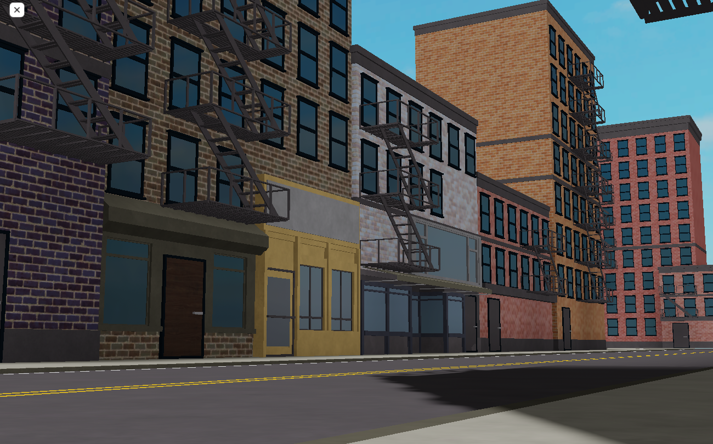

3D Modeling, Design
Designing and building during my free time is an incredibly fulfilling and therapeutic pursuit for me. There's an indescribable joy that comes from bringing my ideas to life and witnessing the gradual progress of buildings and designs taking shape before my eyes. It's like embarking on a creative journey, and with each step, I feel a sense of accomplishment and wonder, knowing that I'm contributing to something unique and meaningful. The process of transformation from mere concepts to tangible, majestic structures is awe-inspiring. It's as if I'm breathing life into my imagination, and as the project evolves, I find myself deeply immersed in the intricate details that make it come alive. The combination of artistic expression and technical finesse fuels my passion, and I take great pride in seeing my creations come to fruition.
Moreover, designing and building offer me an escape from the daily pressures of life. It provides a space where I can immerse myself fully, letting my creativity flow freely. There's a meditative quality to this activity as I lose myself in the craft, forgetting about time and worries. It's a sanctuary where I can explore new ideas, experiment with various materials, and challenge myself to improve constantly.
.jpg)